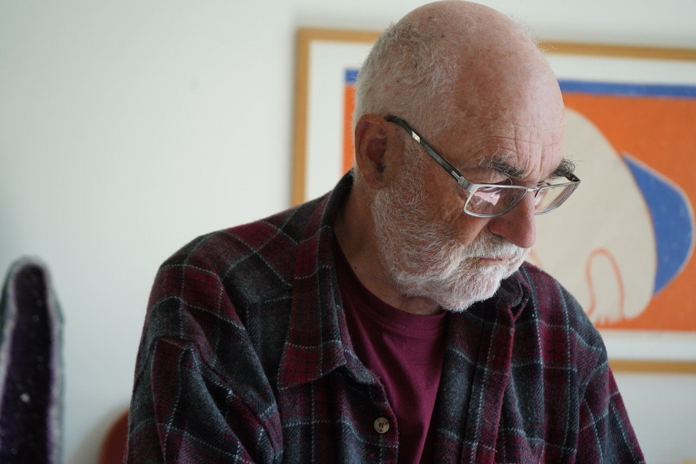

Über mich
* 1944; aufgewachsen in Trimbach Solothurn
Schulen in Olten und Solothurn
Medizinstudium in Basel und Bern
Psychiatrisch - psychotherapeutische Praxis in Bern
Seit 2015 lebe ich in Guarda Graubünden

Zeichnen
Spontanes Kritzeln beim Zuhören hat mich zum Zeichnen geführt.
Die verwendeten Techniken haben sich über vier Jahrzehnte allmählich erweitert, aber ich bin immer beim Papier und verschiedenen Schreibwekzeugen geblieben:
Tuschefüller, Stahlfeder, Bleistift, Kugelschreiber, dürrer Grashalm, Farbstifte, Tuschepipette, Stempel aus Lärchenholz. Neben Tusche verwende ich Gouache. Manchmal grundiere ich eine fertige Zeichnung mit Asche aus dem Ofen oder einem Hauch Pastellkreide.
Ausstellungen
2002 Kunstkeller Bern
2012 Kunstkeller Bern
2020 Chasa Torel Guarda: „Ein Coronakalender“
Ein über fünf Monate sich erstreckendes Tagebuch in Zeichnungsform
2022 Chasa Torell Guarda
„Be Triangulins / Nichts als Dreiecke“
Grossformatige Arbeiten mit Holzstempeln auf Packpapier und Transparentpapier